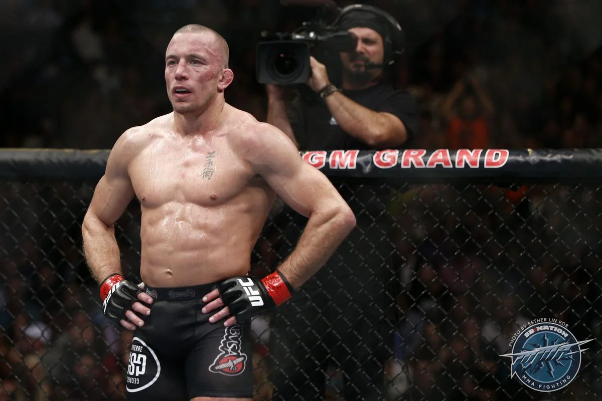

Georges "Rush" St. Pierre
former Canadian UFC Welterweight Champion.

GSP going into the third round at UFC 167, securing a split decision victory and defending his belt against Johny Hendricks
Here's a time line of Georges St-Pierre's life:
- 1981 - Georges St-Pierre was born in Saint-Isidore, Quebec, Canada.
- 1988 - Childhood: Bullied as a child, which led him to start learning Kyokushin karate at age 7. Later, he trained in boxing, wrestling, and Brazilian jiu-jitsu.
- 2002 - Made his professional MMA debut, quickly gaining attention for his skills.
- 2004 - Fought and won his UFC debut against Karo Parisyan.
- 2004 - Fought Matt Hughes for the UFC Welterweight Championship but lost by submission.
- 2006 - Defeated Matt Hughes in a rematch to win the UFC Welterweight Championship for the first time.
- 2007 - Lost the title to Matt Serra in a major upset.
- 2007 - Won the interim Welterweight Championship against Matt Hughes.
- 2008 - Regained the undisputed Welterweight title by defeating Matt Serra in a rematch.
- 2008–2013 - Dominated the welterweight division, defending his title nine consecutive times.
- 2013 - Vacated the Welterweight title and announced a break from MMA.
- 2017 - Returned to the UFC, defeating Michael Bisping to win the UFC Middleweight Championship.
- 2017 - Vacated the Middleweight title, citing health issues.
- 2017 - Announced his retirement from MMA.
- 2020 - Inducted into the UFC Hall of Fame.
- 2019-Present - Focused on acting, business ventures, and promoting MMA globally.
If you have time, you should read more about this incredible human being on his Wikipedia entry.